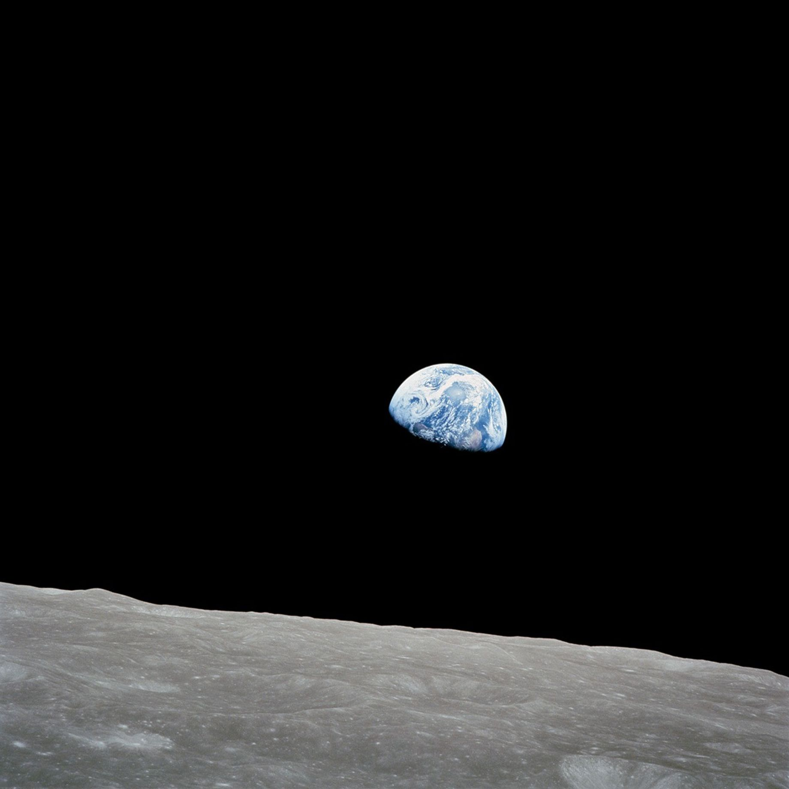
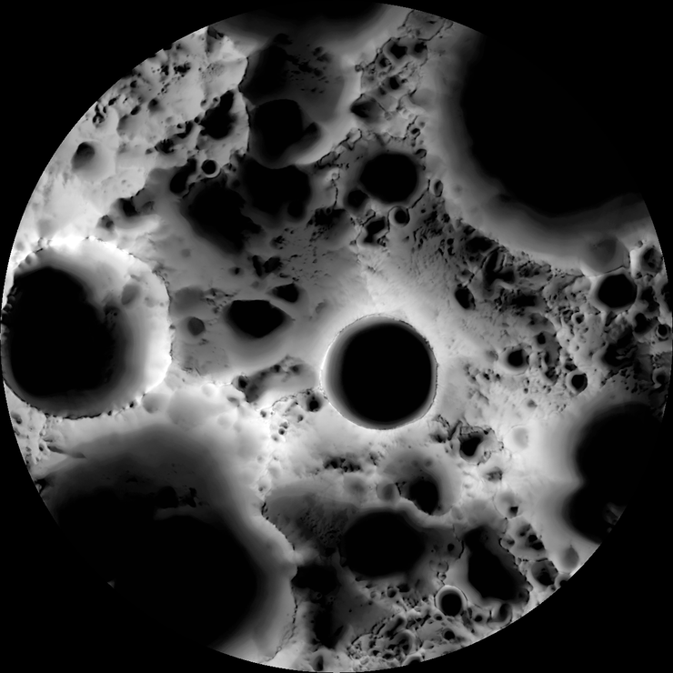
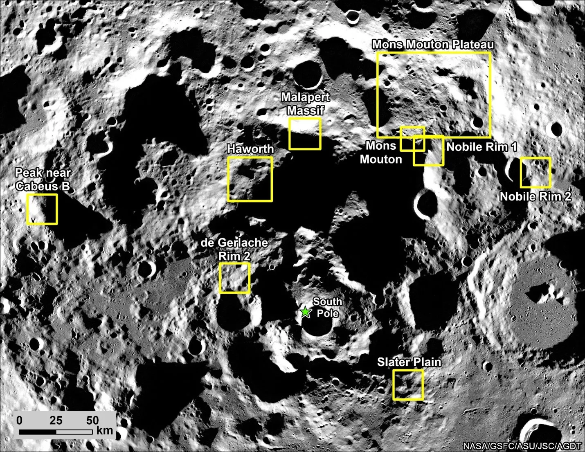

Welcome to GeoProxy
The Moon. Mars.
Here on Earth.
Which landscapes on Earth can help us explore other worlds? Explore named analog landscapes for the Moon and Mars, discover terrain matches, and visit the lunar south pole.

Shackleton craterMoon · Polar illuminationLoading Mars targets…
Explore the named sites and environment groups in the two reference articles. These established analogs provide context for GeoProxy’s terrain discoveries. Choose a photograph to examine it, then follow the source or open the published location.
Loading the field guide…
View all article photographs
Images from the article figures, with links to their original file pages for credits and licensing.
Choose a planetary region
Compare relief, median slope and roughness over a 20 × 20 km footprint on either world.
Inspect Earth candidates
The global terrain screen identifies a shortlist. A finer 500 m grid supplies each candidate’s terrain measurements.
Set field priorities
Adjust isolation, crew climate and rover surface openness. Save a comparison with those preferences.
Rotate the globe and select a marker, or choose a mission by name. Coordinates identify landing sites, impact sites or proposed regions. Rover markers show landing locations.
Loading mission records…
Blue · Historical Green · Active Gold · Planned
Point at the surface for coordinates.
Catalog snapshots from October–November 2026. Groups may share a marker. Missions without published surface positions appear in the selector. Coordinates and mission records adapted from azmth.space Moon and Mars under CC BY 4.0. Each record links to its sources.
Why train on Earth?
Practice the traverse
before the flight.
Artemis simulated moonwalk in Arizona · NASA ↗Read the landscape
Apollo crews practiced geology in Arizona’s volcanic terrain. On a traverse, a crew must decide which outcrop to visit, describe its setting and collect samples before the available time runs out. Earth analogs let crews repeat those decisions and compare what they missed.
Rehearse a lunar field day
In Artemis field tests near Flagstaff, astronauts and ground teams practiced simulated moonwalks, sampling and communication. Artemis II flew around the Moon in 2026. Artemis III is planned as an Earth-orbit lander demonstration, with Artemis IV targeting crewed south-polar exploration.
Compare lunar candidate regions
The team’s downloaded NASA illustration shows an earlier set of Artemis south-polar candidates. The mission globe identifies representative study points from the later regional selection.


Test the next Mars traverse
Curiosity and Perseverance investigate Gale and Jezero. ESA’s planned Rosalind Franklin rover will explore clay-bearing terrain at Oxia Planum and drill below the surface. On Earth, teams can test how rover instruments, wheels and sampling procedures behave on comparable terrain. Gravity, radiation and atmospheric pressure still require separate tests.
The challenge
Where on Earth could a team study terrain like that of a future planetary exploration site? GeoProxy was built for the NASA Space Apps Challenge to help teams discover candidates beyond familiar analog sites.
The current atlas
The explorer compares three Martian and two lunar regions with Earth terrain. Field priorities help rank each shortlist.
What makes a place an analog?
The question determines the site. A volcanic landscape can give a lunar field team practice describing rocks and choosing samples. In the McMurdo Dry Valleys, researchers study how cold, dry conditions limit liquid water, a different question relevant to Mars. GeoProxy’s ranking answers a narrower question about slope and relief.
Behind the maps
MOLA and GMT Earth Relief supply elevations. Natural Earth supplies regional boundaries, GeoNames supplies settlement names, and NASA GIBS supplies satellite imagery. Each map pin marks the center of the sample used for scoring.
Planetary researchers
Identify Earth coordinates worth investigating, inspect the relief and slope differences, and decide which candidates warrant finer-resolution mapping.
Rover and field teams
Shortlist landscapes for reconnaissance. Local surveys are still needed to establish surface hazards, access and permission for a field exercise.
Students and educators
Choose a crater, predict which Earth landscape will rank highest, then use the measurements to explain the result. Discuss which conditions a terrain comparison leaves out.
What a high score tells us
Two regions can have similar typical slopes and elevation ranges even when they formed in different ways. A high score identifies a terrain comparison worth investigating at this sampling scale.
Illusion Break
A field team on Earth still experiences Earth’s gravity, air pressure and radiation environment. The terrain subtotal describes surface shape. Temperature, mineralogy, surface hazards and accessibility require separate evidence.
Beyond the two-day prototype
Future versions can test rankings against independent field observations, calibrate isolation with travel times, and compare predicted rover conditions with measured traverses. New planetary targets and higher-resolution imagery can then enter the explorer through the same data pipeline.
The next observation
Inspect the individual feature differences and imagery, then examine higher-resolution maps and field observations before choosing a study site.
Open the field map and compare established analogs ↗
Loading candidates…
Analog search
Planetary target
Drag or use arrow keys. Select a marker to inspect its mission.Feature weights
Set importance from 0 to 5. Zero omits the criterion. Changes rerank the eligible shortlist.
Saved comparisons
Model formula and sources
Weighted nearest-candidate ranking
This two-day prototype uses a deterministic distance model. The global screen runs offline. Selecting a region reranks its eligible shortlist with the current preferences. The percentages express relative fit under this model.
zᵢ = log₁₀[(Earthᵢ + εᵢ)/(targetᵢ + εᵢ)] / scaleᵢT = 100 exp(−√[Σwᵢzᵢ² / Σwᵢ])Overall = (Wₜ T + ΣwⱼSⱼ) / (Wₜ + Σwⱼ)
ε and scale are the pipeline’s feature-specific offset and Earth variability. Wₜ sums the available terrain weights. Sⱼ are isolation, crew climate fit and rover openness, each scored from 0 to 100.
The pipeline screens Earth terrain and refines 20 candidates per target at 500 m spacing. Each terrain score is 100 × exp(−|z|), using the log feature difference scaled by Earth variability. The terrain subtotal uses the weighted root mean square of z. The overall score averages that subtotal and the available operational criteria using the selected weights.
Isolation reaches 100% at your desired straight-line distance. Crew climate fit uses 100 × exp(−|mean temperature − 15°C| / 20°C). Rover surface openness uses the fraction of bare or sparsely vegetated land. These illustrative field preferences cannot predict crew endurance, evacuation time, rover speed or traction. Missing measurements are omitted and weights renormalized.
Pipeline methods and data sources ↗